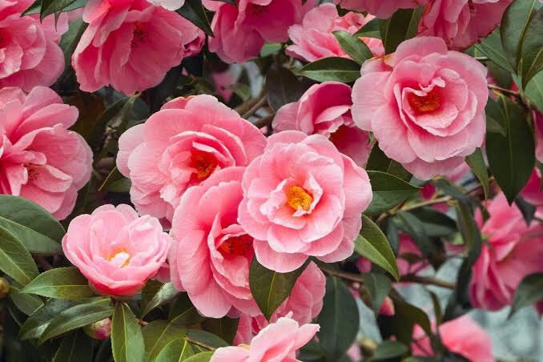
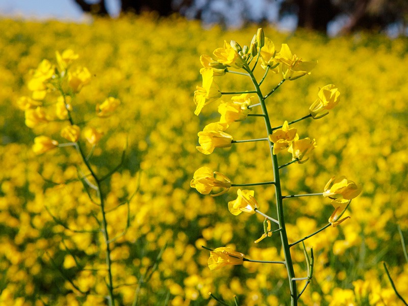
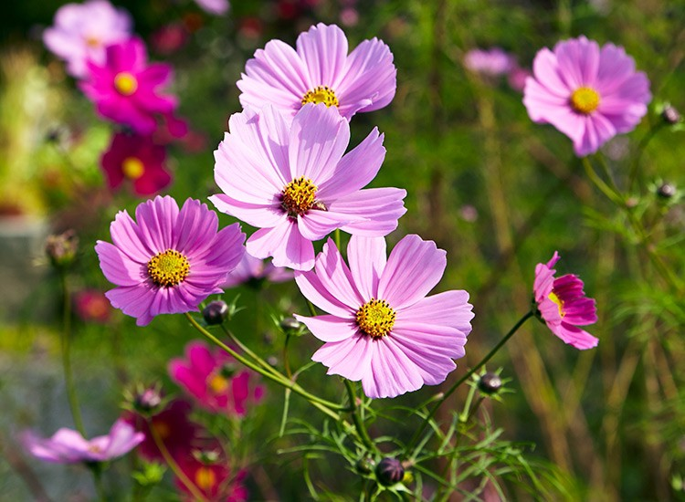
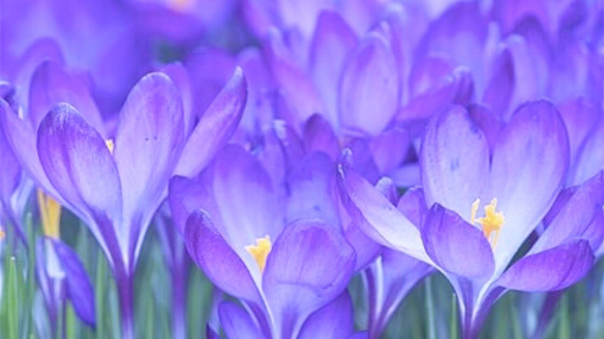
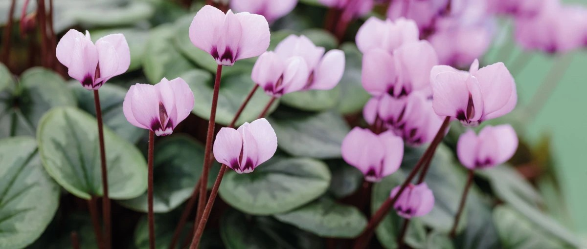

Calla Lily

ตัวแทนแห่งความสง่างามมาตั้งแต่ยุคโรมัน รวมทั้งยังเป็นดอกไม้แห่งความสว่างไสว จึงทำให้ คาลล่า ลิลลี่ เป็นดอกไม้ที่นิยมมากสำหรับงานแต่งงานเป็นสัญลักษณ์ที่บ่งบอกถึงความบริสุทธิ์ เรียบง่ายและสง่างาม
Camelia

ความปรารถนา ความละเอียดอ่อน และความซื่อสัตย์ ดอกคามิเลียสีชมพู สื่อถึงความคะนึงหาดอกคามิเลียสีแดง สื่อถึงความรักและความปรารถนา ดอกคามิเลียสีขาว สื่อถึงความบริสุทธิ์ ความเอ็นดู และความรักระหว่างแม่กับลูก หากใช้ในงานศพ ดอกคามิเลียสีขาวยังสามารถสื่อถึงการไว้อาลัยให้กับคนที่จากไปได้ด้วย
Canola

เป็นการพักผ่อนรับสายลมและแสงแดดในฤดูร้อนกันอย่างเต็มที่ ก่อนที่จะถึงหน้าเก็บเกี่ยวพืชผลทางการเกษตร และก่อนที่ฤดูหนาวอันยาวนานจะมาถึง
Chamomile
เป็นดอกไม้เเทนกำลังใจให้คนสำคัญกิวผ่านเรื่องราวร้ายๆไปได้
Cherry blossom

ความสําเร็จ การประสบผลสําเร็จ และ หัวใจที่เข้มแข็ง
Cosmo

ดอกคอสมอส (ดอกดาวกระจาย)ว่ากันว่าคอสมอส เป็นดอกไม้แห่งความสงบ ในสมัยโบราณเชื่อว่าดอก คอสมอสเป็นดอกไม้สิริมงคลแก่คนเกิดวันอาทิตย์ ส่วนบางตำราก็บอกว่าดอกคอสมอส หมายถึง ความ สันติสุข ความตั้งใจ ความบริสุทธิ์ใจของหญิงสาว และสำหรับชาวญี่ปุ่น ดอกคอสมอสหรือดอกดาว กระจาย มีมาตั้งแต่สมัยเอโดะ ดอกคอสมอสมีรูปร่าง เหมือนซากุระ ดังนั้นชื่อของดอกคอสมอส(K)(f)ใน ตัวอักษรคันจิของญี่ปุ่นจึงมีความหมายว่า ซากุระ แห่งฤดูใบไม้ร่วง และยังหมายถึงเด็กสาวที่บริสุทธิ์
Crocus

เป็นดอกไม้ที่ชาวโรมันนิยมปลูกบนหลุมฝังศพ เพราะชาวโรมันยุคนั้นนิยมเชื่อว่า ดอกโครคัสสามารถทำให้ผู้ตายได้จุติใหม่ โดยมีชีวิตที่ดีกว่าเดิม และในคืนวิวาห์คู่บ่าวสาวนิยมโรยดอกโครคัสบนเตียง เพราะเชื่อว่ากลิ่นของมันเป็นยาโป๊วที่มีสรรพคุณสูง แม้แต่ชาวกรีกก็เชื่อเช่นกันว่า กลิ่นโครคัสสามารถกระตุ้นความรู้สึกที่จะมีเพศสัมพันธ์ได้ดีมาก
Cyclamen

ดอกไม้ที่เป็นสัญลักษณ์ของความสุข สัญลักษณ์ของความจริงใจและความรู้สึกที่ยั่งยืน ส่งหากส่งดอกไซคลาเมนให้ใครจะมีความหมายว่า "ความงามของคุณทำให้ฉันปั่นป่วนและความหมดอาลัยตายอยาก" หรืออีกความนัยหนึ่งคือ "ฉันรักในสิ่งที่หายากและยากที่จะได้รับ"